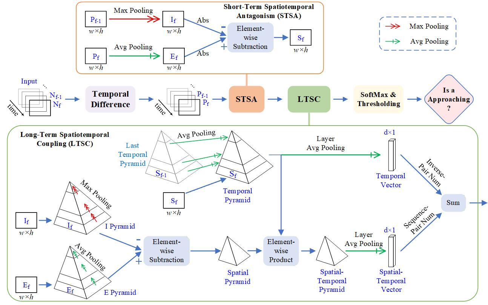
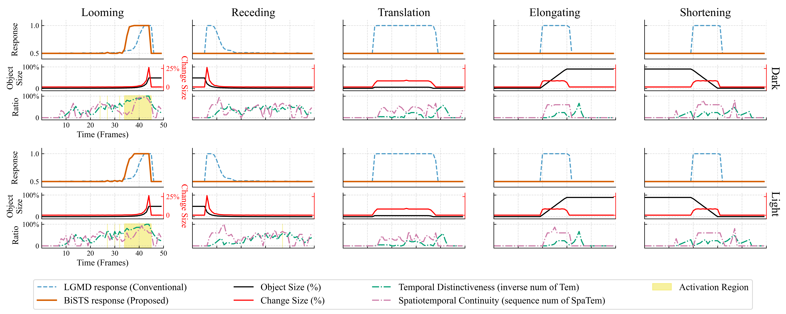
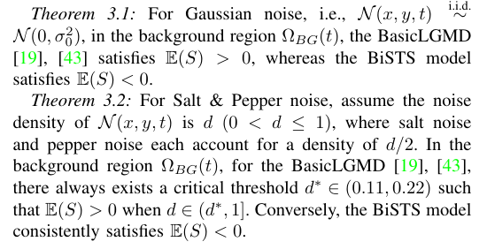
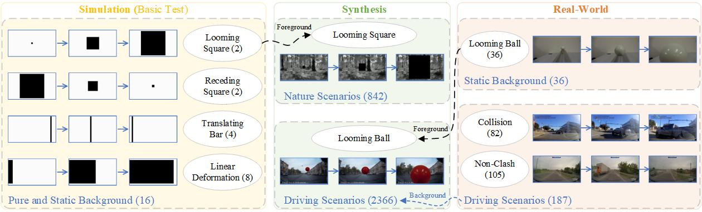
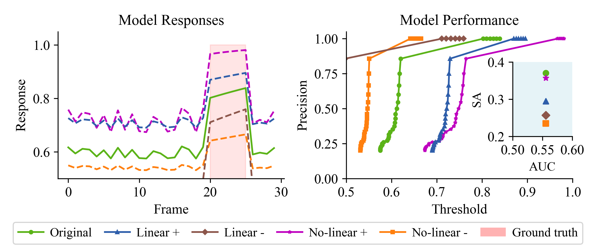
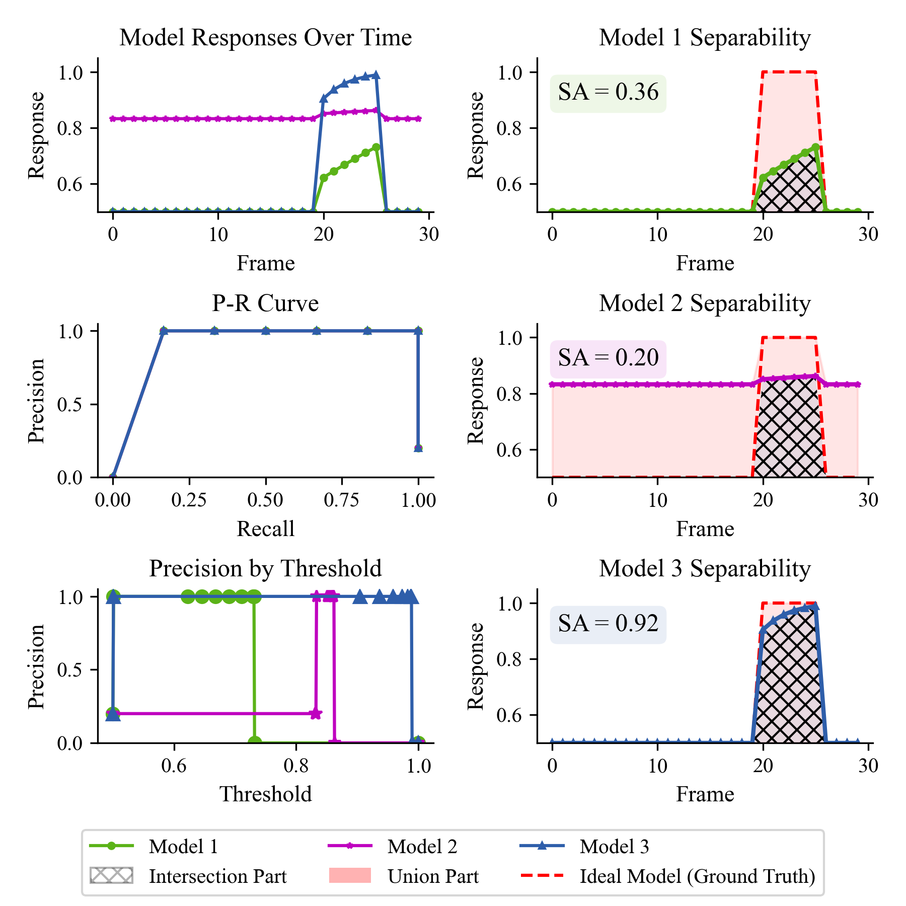
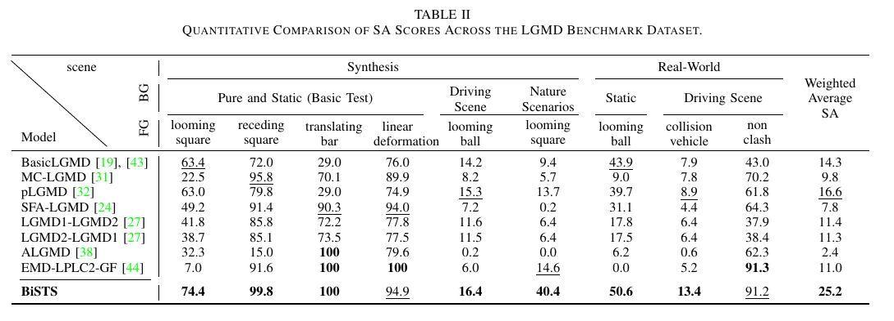
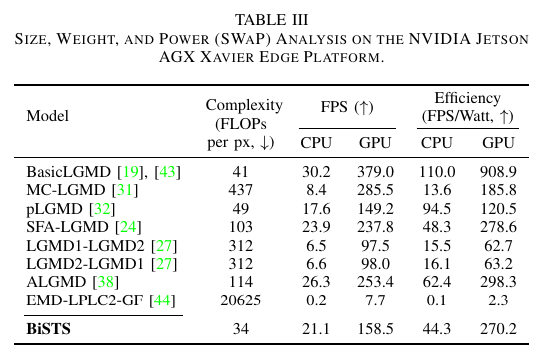
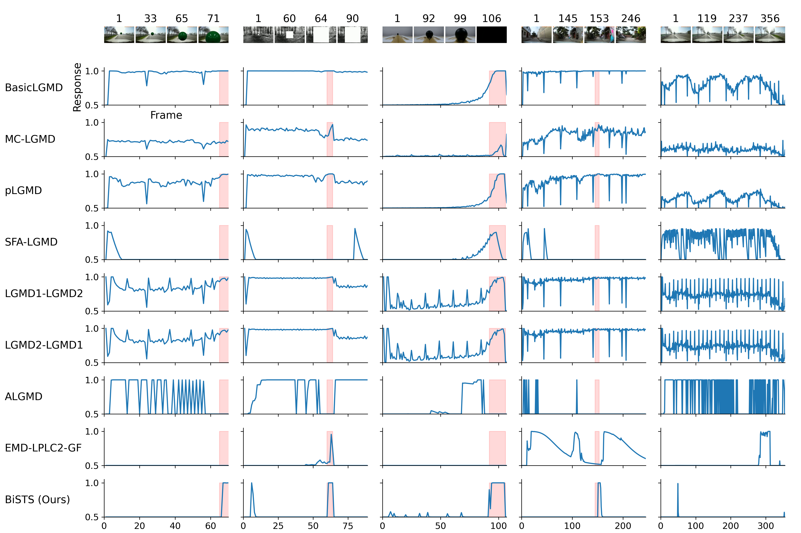

BiSTS: A Biphasic Spatial-Temporal Synergy Architecture Improving Separability of Approaching Motion Recognition
Abstract
Vision-based approaching motion recognition is essential for collision avoidance in resource-constrained robotic and edge systems. Compared with deep feature extraction methods, bio-inspired motion-based models offer a compact and computationally efficient solution. In particular, Lobula Giant Movement Detector (LGMD) models, inspired by the locust visual pathway, have shown strong potential due to their learning-free structure and hardware-friendly computation. Nevertheless, existing LGMD-based models remain vulnerable to non-looming motion patterns and environmental artifacts (i.e., image noise and contrast variations), resulting in missed warnings and false alarms in complex dynamic scenes. To address these challenges, we propose Biphasic Spatial-Temporal Synergy (BiSTS), a compact architecture that jointly exploits short- and long-term spatiotemporal cues to improve motion separability. BiSTS consists of two complementary modules. The Short-Term Spatiotemporal Antagonism (STSA) module with rigorous mathematical foundations suppresses transient non-motion disturbances, while the Long-Term Spatiotemporal Coupling (LTSC) module improves the separability of the approaching pattern under varying contrast conditions. We further build a benchmark by coupling a 3,447 sequence dataset with a separability-oriented metric termed SA, to quantify the response distinction between approaching motion and other patterns. Experiments on an edge device show that BiSTS outperforms state-of-the-art LGMD-based models, with a 51.8\% improvement in SA, while achieving an inference speed of 158.5 FPS and an energy efficiency of 270.2 FPS/W. The proposed framework provides a reliable, efficient, and hardware-friendly baseline for visual collision detection on edge platforms. Code is available at Project Repository.
BiSTS Architecture

Overall architecture of the proposed Biphasic Spatial-Temporal Synergy Architecture (BiSTS). The framework processes continuous sequential frames through a Temporal Difference layer, followed by two core functional modules: Short-Term Spatiotemporal Antagonism (STSA) and Long-Term Spatiotemporal Coupling (LTSC).

Visualization of the motion cue integration outputs (S Layer) under varying intensities of Gaussian and Salt & Pepper (S&P) noise. The Peak Signal-to-Noise Ratio (PSNR) values, displayed in the bottom-right corner of each panel, quantify the signal fidelity relative to the ideal, noise-free baseline shown in the top row (Original). The proposed BiSTS architecture consistently achieves the highest PSNR, demonstrating superior noise suppression capabilities while strictly preserving essential structural motion cues.

Comparison of neural responses between the BasicLGMD and the proposed BiSTS model across five distinct motion patterns under dark (top) and light (bottom) conditions. Each tested pattern is detailed in three vertically aligned sub-panels. The top sub-panel contrasts the normalized responses of the BasicLGMD (blue dashed line) and BiSTS (orange solid line). The middle sub-panel plots the absolute object size (black line, left y-axis) alongside the target's change in size (red line, right y-axis). The bottom sub-panel illustrates the LTSC mechanism by tracking temporal distinctiveness (green dot-dash line) and spatiotemporal continuity (pink dot-dash line). The yellow shaded regions denote the effective LTSC activation windows.

These theorems analytically validate the robustness of the proposed framework against environmental noise. Mathematically, the baseline BasicLGMD inherently yields E(S) > 0 under Gaussian noise and breaks down under impulsive noise at a remarkably low density threshold. Conversely, the BiSTS model consistently maintains E(S) < 0 regardless of the underlying noise distribution. Consequently, the subsequent rectification operation is theoretically guaranteed to filter out background noise in expectation, maximizing the overall reliability of the detection system.
LGMD Benchmark
Overview and SA metric

Overview of the LGMD Benchmark dataset structure. The framework comprises three main modules: Simulation (basic tests), Synthesis (controlled generation), and Real-World scenarios. In the diagram, the ellipses represent the specific foreground motion types (e.g., looming square), while the blue text at the bottom-left of each module indicates the background scenarios. The numbers enclosed in parentheses denote the total number of video sequences in each respective subset. Furthermore, the synthesis pipeline combines foregrounds and backgrounds from respective sources (identified by dashed arrows) to enhance scene diversity.

Models of approaching motion recognition cannot enhance their separability or AUC through simple boost/inhibition mechanisms due to a fundamental trade-off between true positive rate and false negative rate. As the left panel illustrates, enhancing responses to approaching motion inadvertently amplifies noise, while suppressing non-target signals weakens the desired motion response. This limitation is clearly reflected in the precision-threshold curves (right panel), where the precision distribution shifts almost horizontally compared to the original, rather than being enhanced. The right-end floating subplot confirms that this shift yields no net improvement in either classification performance (AUC) or separability (SA), ultimately limiting the model's real-world applicability.

Illustration of the proposed performance evaluation metric comparing traditional metrics with the defined SA index. The left column displays the temporal responses, Precision-Recall (P-R) curves, and Precision-Threshold relationships for three representative model behaviors. The right column visualizes the geometric definition of the SA metric, calculated based on the Intersection Part (hatched area) and Union Part (pink shaded area) between the actual model response and the Ideal Model (Ground-truth, red dashed line). Model 3 demonstrates optimal performance with an SA of 0.92, indicating high alignment with the ground-truth signal.
Videos of benchmark dataset
Benchmark evaluation

Quantitative Comparison of SA Scores Across the LGMD Benchmark Dataset.

Size, Weight, and Power (SWaP) Analysis on the NVIDIA Jetson AGX Xavier Edge Platform.
Response curves of various computational models

System response curves of various computational models across synthesized and real-world datasets. Each column represents a distinct testing scenario, from left to right: (1) a synthesized looming ball superimposed on a driving background, (2) a synthesized looming square embedded in a natural woodland scene, (3) a real-world looming colored ball against a static background, (4) a real-world vehicle collision event, and (5) a real-world non-collision driving sequence. The top row displays sample keyframes from the corresponding video sequences. Each row denotes the output response of a specific baseline model, with the bottom row representing our proposed BiSTS model. Red shaded areas indicate the ground-truth time windows of the actual looming or collision events.
Poster (Generlized by Google NotebookLLM with Gemini)
BibTeX
@article{yi2026bists,
title={BiSTS: A Biphasic Spatial-Temporal Synergy Architecture Improving Separability of Approaching Motion Recognition},
author={Zheng, Yi and Xu, Mingshuo and Peng, Jigen and Li, Haiyang and Wang, Zewen and Yue, Shigang},
journal={arXiv preprint arXiv:},
year={2026},
}